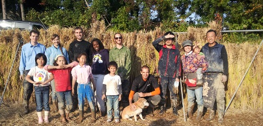

Welcome to Daruma An Farms!
Daruma An Farms is a family owned and operated farm located on Sado Island, Japan. We grow Koshihikari, Koshiibuki, and Black Rice.
At Daruma-an Farms, we put our heart and soul into creating a delicious product. Our sustainable agriculture methods also help to preserve the quality of soil and water for the farming trade and future generations. Our mountain-top fields are fed by pure streams that pass through no other paddies.
Be assured that the rice you buy from us isn't mixed up with rice from other fields or farms, like the more inexpensive "blends" at supermarkets. We believe that each paddy has its own unique blend of sunlight, air, water and soil, and we do our best to maintain its "local" flavor. Open up a bag of Daruma-an rice in your kitchen and become intimately linked to Sado's nature.
Another bonus? You can order a year's supply, and we'll store it for you in our customized rice refrigerator. It maintains a constant temperature of 15 degrees Celsius in order to preserve that "new rice" freshness year-round.
We can ship our rice anywhere in Japan, so please check out the shop if you would like to purchase some!